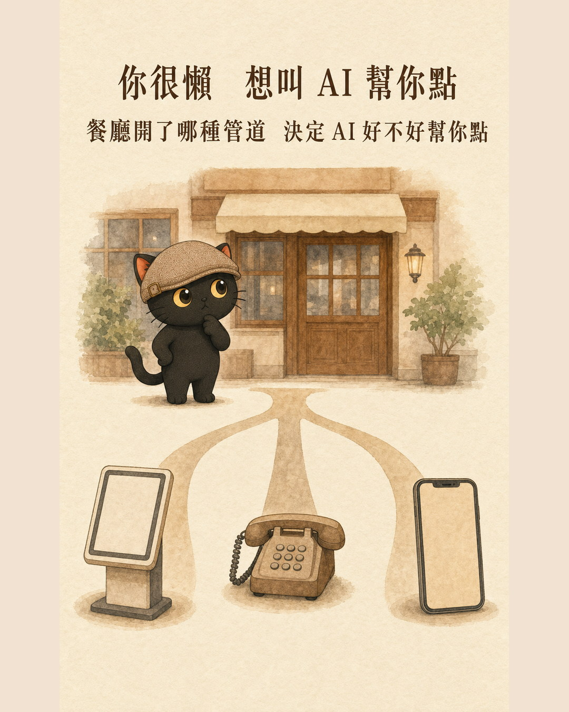
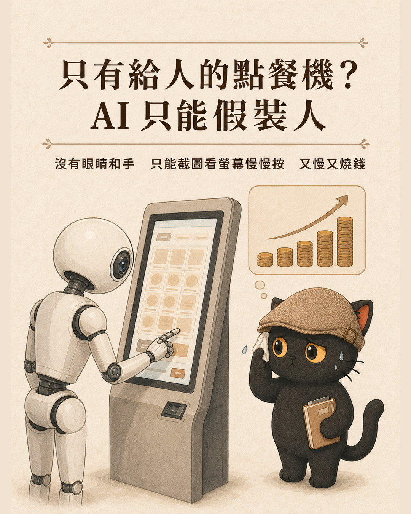
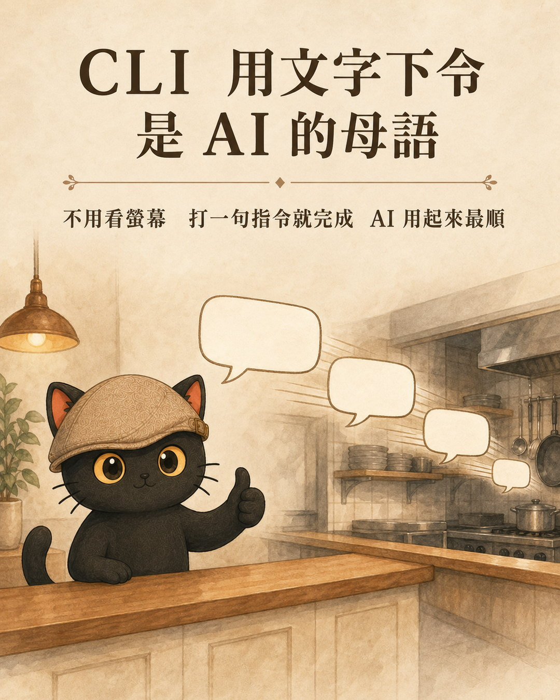
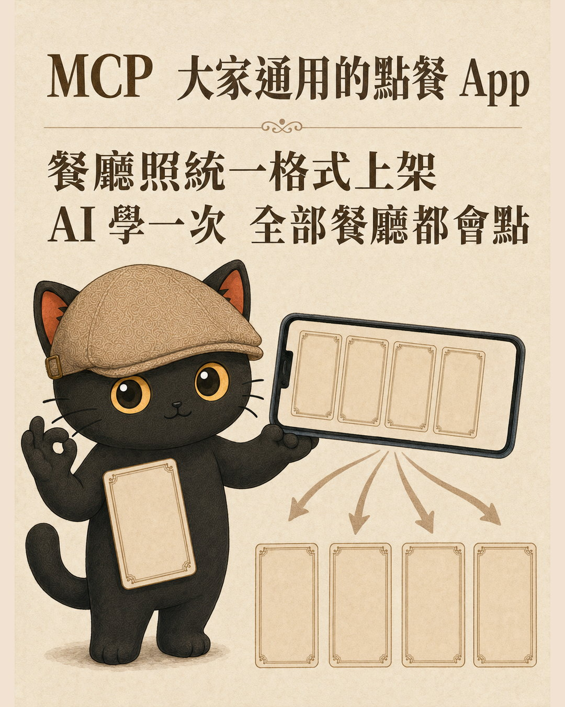
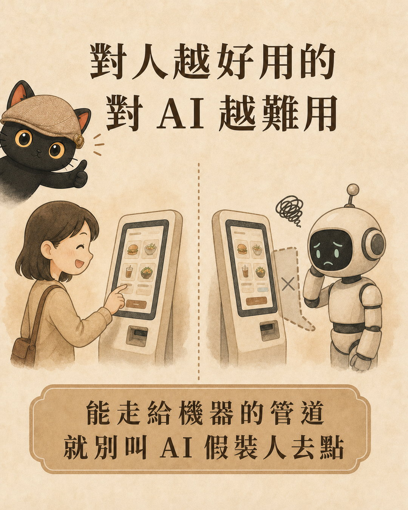

CLI, API, MCP, and computer use are terms that appear every day in the AI era. However, they are often ranked in a list to compare, and the more you compare, the more confused you become. This article uses the metaphor of 'asking AI to go to a restaurant and order food' to explain each term in four layers: terminology, principle, restaurant scenario, and actual behavior. Finally, it provides a set of directly usable criteria for determining the priority of the pipeline when you want AI to help you connect to a service.
- People who have heard these words often and are using AI tools but haven't really understood the differences between them
- People who want AI to help with a service or system but are stuck on which method to use
- People who need to explain these terms to colleagues, students, or clients and want a simple analogy that others can understand
- Four-layer breakdown of the five terms (term, principle, scenario, behavior), which can be directly used to explain to others
- A set of criteria for selecting a pipeline, ranked from the most cost-effective to the most expensive, so you can directly follow the order when connecting to a service next time
- Three common misunderstandings, including whether MCP actually replaces API

First, establish a concept: The kitchen remains the same from start to finish
No matter which way you order food, the chef in the back of the restaurant is making the same dish. Whether you use a touch screen, go to the counter to order, have a robot deliver the order, call a dedicated line, or use a general app, the final dish served is the same.
First, remember this point, and you won't confuse 'ordering methods' with 'the person making the dish' later on.
Main theme: What kind of ordering channel does this restaurant have
Once you decide 'I'm too lazy to queue myself, I want AI to order for me', the real issue comes up: What kind of channel has this restaurant opened for AI to use.
Some restaurants only have one touch-screen ordering machine for people to use, nothing else. Some have a dedicated phone line. Some are connected to a general ordering app. The kind of channel a restaurant has opened directly determines whether AI can order for you smoothly, quickly, and affordably.

I. GUI: That touch-screen ordering machine for people
GUI stands for Graphical User Interface, which is the graphical interface you can see on the screen, including buttons, icons, and windows.
Each function is drawn as a visible graphic, and you use a mouse or your finger to touch it. It is designed for 'human eyes and hands.'
The touch-screen ordering machine at the entrance, with photos of dishes displayed in grids.
People use their fingers to tap the photos, select larger sizes, and press to checkout. It is intuitive, but it is slow step by step.
The problem arises. When this restaurant only has this machine for people, AI needs to order for you. How should it do that? This brings up the next term.
II. Computer use: The universal clumsy method that burns tokens
Computer use, also called GUI automation, means letting AI act like a human to operate the screen.
Some services only have a graphical interface for people to see, without a dedicated channel for machines. AI wants to use it, but can only mimic humans. It has no eyes or hands, so it can only first take a screenshot of the screen to 'see', determine the button's position, and then simulate mouse and keyboard clicks to tap or type. Each step requires a new screenshot and a new judgment of the next step.
This restaurant only has one touch-screen ordering machine, no phone, and no app. You're too lazy to queue and press one button at a time, so you send a robot to do it instead. The robot stands in front of the machine, uses its camera to look at the screen, and slowly presses with its mechanical arm.
Universal, but clumsy and expensive. The following three characteristics are very practical.
It doesn't require the restaurant to make any special accommodations. Anything that a person can do on the screen, it can do. This is its only, but also very important, advantage.
Before pressing each step, it needs to take a photo to check what the screen looks like before proceeding. Each screenshot is a full image sent to AI for interpretation, which consumes a lot of tokens. One order process may involve looking at dozens of screens.
If the screen is redesigned, an ad pops up, or the loading is a bit slow, it may misinterpret or press the wrong button.

Three, CLI: AI's home field
CLI is Command Line Interface, a command-line interface. It's that window with a black background that only allows typing.
There are no buttons or images. You type one line of text command, and the system does it accordingly. Text in, text out.
You walk up to the counter, don't look at the menu, and directly order with a line of jargon: large cup Americano, no ice, half sugar, add espresso.
For humans, you must first learn to recite this string of incantations and know how to input the commands. This process presents a challenge for beginners. However, once you master it, completing the entire task is very fast; it requires only one sentence.
For AI, the situation is completely reversed. AI was originally designed to think and output through text, so inputting commands is like speaking its native language. It doesn't need to look at the screen, doesn't need to pretend to be human, just sending the text command completes the task.
This is why AI assistants like Claude Code and Codex have almost all evolved into CLI forms. They stand at the counter of this text-based order system, and it's the most convenient.

Four, API: The Dedicated Phone Line for Programs
API stands for Application Programming Interface, application programming interface. In plain terms, it's a window that a system opens for other programs to use.
Without a screen, without a person looking at the interface, programs directly send and receive data, with the format agreed upon in advance. It's like a dedicated phone line.
A restaurant opens a dedicated phone number for takeout and phone orders. You follow its specified format to place an order: dish number, quantity, address.
AI doesn't need to look at the screen, just follow the format to send the order data, completing the task quickly and stably, much more reliable than clicking buttons through screenshots.
The downside is that each restaurant's dedicated phone line rules are different. One restaurant requires you to first report your member number, another has a different format, and another only accepts specific writing styles. So AI has to learn how to place orders for each new restaurant. Receiving ten restaurants means learning ten times.
Five, MCP: A Universal Standard for AI
MCP stands for Model Context Protocol, model context protocol. In plain terms, it's a universal standard specifically designed to let AI connect to various tools.
Previously, each API had its own unique format, and AI had to connect to each one individually. MCP ordered a set of common specifications, defining how the menu should look, how to ask which functions are available for this restaurant, and how to send orders. The tool provider only needs to package itself according to this specification. Any AI that supports MCP can connect and use it immediately.
A universal ordering app for all restaurants. Restaurants can upload their menus according to the app's unified format. When you open the app, you can see what each restaurant offers and what information each dish requires, and you can order directly.
Once AI learns how to use this app, it can order from all restaurants that are listed. It doesn't need to relearn for each restaurant. Moreover, once it connects, it can also read the menu itself and know which functions are available for each restaurant.

A counterintuitive rule.
After reading five items, you will find an interesting fact. The friendliness of the interface to humans is exactly opposite to its friendliness to AI.
Graphical interfaces are visible and clickable, so even beginners can use them. Command-line interfaces require memorizing commands, and many people get stuck just at the beginning.
Text is AI's native language, and typing commands gets you there immediately. Graphical interfaces require AI to pretend to be a human looking and clicking, which is slow, expensive, and prone to errors.

As for API and MCP, they are later dedicated channels for programs and AI, one with each company connecting separately, and one with one learning covering all.
Judgment that can be taken away: how to choose for AI to connect to a service
If you later want AI to help you connect to a service, the judgment order is actually simple. From the cheapest to the most expensive, follow this order to ask.
If it does, use it first. AI learns once and can even see the menu to know which functions are available, making it the most convenient.
If it does, go with the API. It is fast and stable, although it requires one-time effort to set up the rules for this company.
That is when computer use comes into play. It is versatile, but the slowest, most token-consuming, and most error-prone, being the last resort when no better channel is available.
Conclusion
CLI, API, MCP, computer use, these terms often confuse people because they are forced into a list for comparison. However, they are actually different ways of serving the same meal. Putting them back into the context of 'asking AI to order food for you' and seeing which part each is responsible for will clarify the confusion.
It is the same meal, the difference lies only in which channel the AI takes over. The friendliness of that channel determines how smooth and costly the process is.